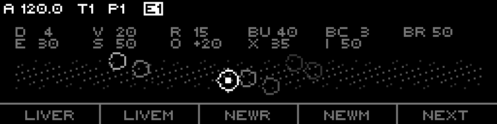
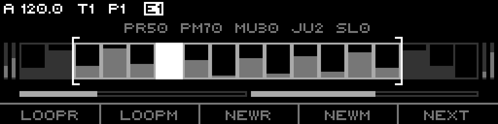
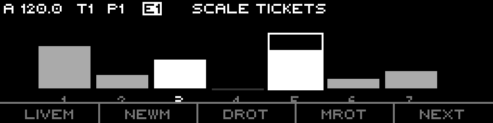
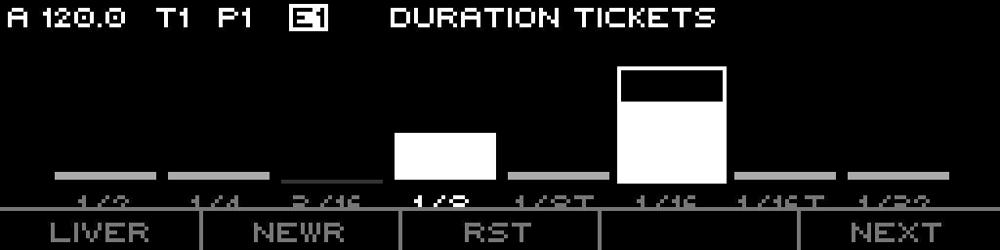

A probability sequencer. Instead of placing notes, you set the odds — how dense, how long, how high, how repetitive — and the engine rolls a stream of events that obey them. Rhythm and melody are two independent machines, each running either as a frozen loop you can mutate, or a live roll that never repeats. Pitch and duration are biased by tickets: a lottery where you hand more tickets to the notes and lengths you want to hear more often.
Stochastic is one of the eight track engines. Set a track's mode to Stochastic and it becomes a generator: you don't draw a pattern, you tune the statistics that produce patterns. Two engines run side by side:
Each domain has its own random seed and its own mode (Loop or Live). The output is a single CV + gate stream: the rhythm engine times the events, the melody engine colours them.
| Note track | Stochastic |
|---|---|
| You place each note and gate | You set probabilities; the engine rolls the notes |
| Fixed grid of equal steps | Event-driven — each event picks its own duration |
| Pattern is exactly what you drew | Pattern is a frozen roll (Loop) or never repeats (Live) |
| Per-step probability fields | Whole-sequence statistics + per-degree tickets |
| Edit = move notes | Edit = bias the dice, re-roll, mutate, freeze |
It still rides the Performer chassis: scale, root, clock divisor / multiplier, reset measure, octave, transpose, slide, fill-mode — and every statistic is routable.
Each domain answers one question: do I roll once and remember, or roll fresh every event?
Loop or Live; when they differ it reads Split.A generated event is one parent hit. Internally each step holds a 6-byte record split into the two domains:
| Domain | Fields |
|---|---|
| Rhythm | duration index (which LUT slot), density rank, burst tails (cluster size), burst rate,
rest, legato, slide flags, valid bit. |
| Melody | scale degree (0–127), octave (−8…+7),
valid bit. |
An event can spawn a burst — a cluster of extra child hits packed after the parent (§8). The Loop
buffer is up to CONFIG_STEP_COUNT steps; the active window (First + Size) chooses which slice
plays.
Pitch and duration are chosen by a weighted lottery. Every candidate (a scale degree, or a duration slot) holds a ticket count; the generator draws in proportion to the tickets. Three states per candidate:
−1 removes a degree entirely; 0 is the flat
baseline; 1–100 raises its odds. Duration Tickets do the same for the 8 duration slots.Two rotations re-index the pitch lottery without re-editing tickets:
Stochastic is event-driven, not grid-driven. Each event carries a duration; the engine counts that many ticks, then fires the next event. The base clock is the sequence Divisor scaled by the Clock Multiplier; an event's duration is a fraction of that base, picked from an 8-slot table:
| Slot | Factor | Length at Divisor = 1/16 |
|---|---|---|
| 0 | ×8 | 1/2 |
| 1 | ×4 | 1/4 |
| 2 | ×3 | 3/16 (dotted 1/8) |
| 3 | ×2 | 1/8 |
| 4 | ×4/3 | 1/8 triplet |
| 5 default | ×1 | 1/16 (= the Divisor) |
| 6 | ×2/3 | 1/16 triplet |
| 7 | ×1/2 | 1/32 |
Note Duration picks the centre slot; Variation spreads the draw around it; the Duration Tickets page can weight individual slots directly. Reset Measure re-anchors the sequence every N bars; a window edit (First/Size) snaps the engine immediately.
These knobs (the LIVE page top row, plus a few) shape when and how events fire:
| Knob | Range | Effect |
|---|---|---|
| Note Duration (DURA) | 0–7 | Centre duration slot (§6). |
| Variation (VARI) | 0–100 | How widely the duration draw spreads around DURA. |
| Rest (REST) | 0–100 | Probability an event is silent. |
| Feel (FEEL) | 0–100, detent 45–55 | Bends the bar toward 3 (low) or 5 (high) beats per cycle — a swing/groove warp. Centre = off. |
| Gate Length (GATE) | 0–100 | Spread of per-event gate width around a 50% centre (0 = exact 50%, 100 = wide spread). Floored to stay audible. |
| Legato (LEGA) | 0–100 | Probability events tie into the next (no re-trigger). |
| Complexity (CMPX) | 0–100 | Rhythmic intricacy of the generated pattern — low = plain, high = busy/syncopated. |
| Slide (SLID) | 0–100 | Probability an event glides to the next pitch (portamento, uses the track Slide Time). |
A burst turns a single event into a cluster of rapid child hits — a ratchet, a flam, a trap roll. Four knobs control it:
| Knob | Range | Effect |
|---|---|---|
| Burst (BURS) | 0–100 | Probability an event spawns a cluster. |
| Burst Count (BCNT) | 0–100 | How many cluster cells (maps to 2–8 hits). |
| Burst Rate (BRAT) | 0–100 | The cluster's internal speed / timing curve. |
| Burst Hold | 4 modes | Pitch & fit behaviour (below). |
Burst Hold packs two orthogonal choices into one setting:
| Mode | Pitch | Timing |
|---|---|---|
Hold/Fit | cluster shares the parent's pitch | packs into one parent duration |
Hold/Over default | shares pitch | uniform rate, can overflow the duration |
Roll/Fit | each cell rolls its own pitch | packs into one duration |
Roll/Over | each cell rolls own pitch | uniform rate, can overflow |
* to the Burst readout. Lengthen the duration
to bring bursts back.The pitch distribution is shaped Marbles-style — a bell of likely degrees you bias and widen, on top of the ticket weighting:
| Knob | Range | Effect |
|---|---|---|
| Bias (BIAS) | 0–100 | Centre of the pitch distribution — low = lower notes, high = higher. |
| Spread (SPRE) | 0–100 | Width of the distribution — 0 = one note, 100 = whole range. |
| Range (RANG) | 0–100, centre 50 | Octave field: 50 = single octave; >50 widens up to 4 octaves; <50 adds a per-event octave-jump chance. |
| Contour (CONT) | ±100 | Directional tendency — positive favours rising lines, negative falling. |
| Repeat (REPT) | 0–100 | Chance to reuse the previous event verbatim (note + octave + duration + articulation). 100% freezes on the last event. |
The LIVE page draws this distribution as a soft "bell haze" behind the event constellation — Bias moves it up and down, Spread fattens it, so you can dial pitch character by eye.
The LOOP page holds the controls that only matter once a domain is frozen — how the loop evolves, and how its window is shaped:
| Knob | Range | Effect |
|---|---|---|
| Patience R / M | 0–100, 100 = off | Auto-reroll. As the loop repeats, a Poisson "boredom" builds; at the expected point it regenerates the domain. Lower = sooner. 100 disables it. Split per rhythm / melody. |
| Mutate | 0–100 | Per-cycle chance to alter one event in place — gentle drift instead of a full reroll. |
| Jump | 0–100 | Octave-walk register — chance the whole line jumps an octave at the cycle boundary. |
| Sleep | 0–100 | Chance of skipping (silencing) cycles — the loop drops out and returns. |
| First / Size | 0… / 2… | The play window into the buffer — loop start and length. |
| Rotate | ±64 | Rotate the events within the window (no change to window bounds). |
| Mask R / Tilt R | 0–100 / 0–100 | Deterministic rhythm thinning (LoopR only): Mask cuts events by rank, Tilt biases which survive (centre 50 = pure cut). |
| Mask M / Tilt M | 0–100 / 0–100 | Pitch-centrality filter (LoopM only): keep tonal (Mask, 100 = bypass) or anti-tonal (Tilt) notes. |
The editor has four pages, cycled with F5 Next:
| Page | Header | What it shows |
|---|---|---|
| Live | LIVE | An event "constellation" + the pitch bell-haze; hold a step to edit its knob. |
| Loop | LOOP | Loop evolution + window controls; hold a step to edit its knob. |
| Pitch | SCALE TICKETS | One bar per scale degree; set tickets + rotations. |
| Duration | DURATION TICKETS | 8 duration slots; set tickets + per-slot rest. |

The LIVE page: each recent event is a ring (newer = brighter) floating over the Bias/Spread pitch haze;
the two readout rows show the live knob values. The 16 step keys map to the shaping knobs — hold a step and turn
the encoder. Footer: LiveR·LiveM·NewR·NewM·NEXT.
LIVE step → knob map (hold a step + encoder):
| Steps 1–8 (top) | Steps 9–16 (bottom) |
|---|---|
| 1 DURA · 2 VARI · 3 REST · 4 FEEL | 9 CMPX · 10 CONT · 11 BIAS · 12 SPRE |
| 5 GATE · 6 LEGA · 7 BURS · 8 BCNT | 13 RANG · 14 SLID · 15 REPT · 16 BRAT |

The LOOP page: the loop "tape" with the First/Size window and per-cycle evolution controls; the side bars are
the Mask/Tilt filters. Footer: LoopR·LoopM·NewR·NewM·NEXT.
LOOP step → knob map:
| Steps 1–8 (top) | Steps 9–16 (bottom) |
|---|---|
| 1 Patience R · 2 Patience M · 3 Mutate · 4 Jump | 9 First · 10 Size · 11 Rotate |
| 5 Sleep · 7 Mask M · 8 Tilt M | 15 Mask R · 16 Tilt R |
On both hero pages the footer is the same: F1 LoopR/LiveR · F2 LoopM/LiveM · F3 NewR/UndoR · F4 NewM/UndoM · F5 NEXT. Shift swaps F3/F4 to the Undo actions and gives coarse (×10) encoder steps on most knobs. The LED rows colour-code the knob groups (rhythm vs pitch, Loop-only filters at the row ends).

SCALE TICKETS: one bar per scale degree (tall = more tickets), an excluded degree shows as a baseline dash,
the playing degree is bright, the cursor degree is boxed. Footer: LiveM·NewM·DROT·MROT·NEXT.
Header SCALE TICKETS. Each step is one scale degree; press a step to select it, encoder sets its
ticket (−1…100). The active degree lights as it plays. Banks shift with
←/→ when the scale has more than 16 degrees. Footer:
F1 LoopM/LiveM · F2 NewM · F3 DROT · F4 MROT · F5 NEXT — DROT / MROT flip the encoder to edit Degree /
Mask rotation instead of a ticket.

DURATION TICKETS: the eight duration slots, labelled by their note value at the current Divisor. Weighted
slots rise; an excluded slot shows a baseline dash. Footer: LiveR·NewR·RST·—·NEXT.
Header DURATION TICKETS. Eight steps = the eight duration slots; encoder sets each slot's ticket. The
slot labels track the current Divisor (so they read real note values, not hardcoded 1/16 strings). Footer:
F1 LoopR/LiveR · F2 NewR · F3 RST · F5 NEXT — RST flips the encoder to edit the global Rest
probability.
| Control | Does |
|---|---|
| Hold step + encoder | Edit that step's bound knob (Live/Loop) or its ticket (Pitch/Duration). |
| Shift | Persist multi-select (hold a set, edit together); coarse encoder steps. |
| F5 NEXT | Cycle the four pages. |
| Page+step 15 | On LIVE: Random — randomize the Live-row knobs. |
| Context menu | INIT · EVEN · RANDOM · BurstHold (Hold↔Roll toggle). |
The track-global / clock settings live on a separate config list:
| Row | Range / values |
|---|---|
| Lock | freeze the sequence content (A/B preview anchor) |
| Play Mode | Aligned / Free |
| Clock/Div | clock divisor (default 1/16) |
| Clock Mult | 50–150 %, routable |
| Reset Measure | 0–128 (0 = off) |
| Scale / Root Note | inherit (Default) or override, routable |
| Octave / Transpose | routable |
| CV Update | Gate / Always |
| Slide Time | 0–100, routable (drives the Slide articulation) |
| Fill Mode | None / Gates / Next Pattern / Condition |
| Parameter | Range | Default | Domain |
|---|---|---|---|
| Note Duration | 0–7 | 5 (×1) | rhythm |
| Variation | 0–100 | 16 | rhythm |
| Rest | 0–100 | 0 | rhythm |
| Feel | 0–100 | 50 (off) | rhythm |
| Gate Length | 0–100 | 0 | rhythm |
| Legato | 0–100 | 0 | rhythm |
| Complexity | 0–100 | 50 | rhythm |
| Burst | 0–100 | 0 | rhythm |
| Burst Count | 0–100 | 0 | rhythm |
| Burst Rate | 0–100 | 50 | rhythm |
| Burst Hold | 4 modes | Hold/Over | rhythm |
| Slide | 0–100 | 0 | rhythm |
| Bias | 0–100 | 50 | melody |
| Spread | 0–100 | 50 | melody |
| Range | 0–100 | 50 | melody |
| Contour | ±100 | 0 | melody |
| Repeat | 0–100 | 0 | melody |
| Degree Tickets | −1 / 0 / 1–100 | 0 | melody |
| Degree / Mask Rotation | ±32 | 0 | melody |
| Duration Tickets | −1 / 0 / 1–100 | 0 | rhythm |
| Patience R / M | 0–100 (100=off) | 100 | loop |
| Mutate | 0–100 | 0 | loop |
| Jump | 0–100 | 0 | loop |
| Sleep | 0–100 | 0 | loop |
| First / Size | 0… / 2–step count | 0 / 32 | loop |
| Rotate | ±64 | 0 | loop |
| Mask R / Tilt R | 0–100 / 0–100 | 100 / 50 | loop (rhythm) |
| Mask M / Tilt M | 0–100 / 0–100 | 100 / 0 | loop (melody) |
* flag).Both domains Live. Note Duration 5, Variation 20,
Rest 15, Bias 60, Spread 40, Range 55. Exclude the 4th and 7th in
Scale Tickets — a restless, in-key stream that never loops.
Rhythm Loop + NewR until you like the groove; melody Live. Set
Complexity 40 for the rhythm; drive the melody with Bias/Spread live.
Both Loop, roll a pattern. Patience R 60, Patience M 75,
Mutate 20 — the bed re-rolls and drifts on its own. Add Sleep 15 for breathing gaps.
Note Duration 3 (1/8), Burst 70, Burst Count 60,
Burst Rate 80, Burst Hold Hold/Fit — a single pitch with dense packed ratchets. Watch
the * flag if rolls go silent.
Melody Loop. Scale Tickets: root 80, 3rd 50, 5th 70, everything else 0, exclude the
2nd/6th. Spread 30, Range 65 — a triadic arpeggio that re-voices on each NewM.
Both Loop, Size 16. Route an LFO to Rotate — the same 16
events keep re-ordering, a shifting riff from one frozen roll.